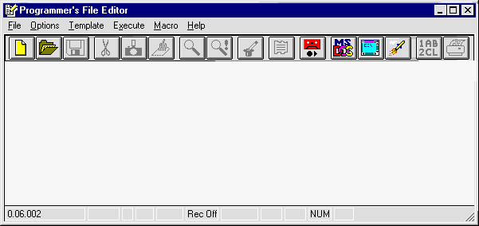

PFE can be started by double clicking on its
icon, which may be on the start menu or desktop. Otherwise the start
menu find option can be used to search for PFE
which will locate it on the hard disk. The initial appearance of
PFE is as follows.

A application level pull-down menu at the top
of the window provides a standard File menu. The File Open …
option can be used to prepare for entering source code.